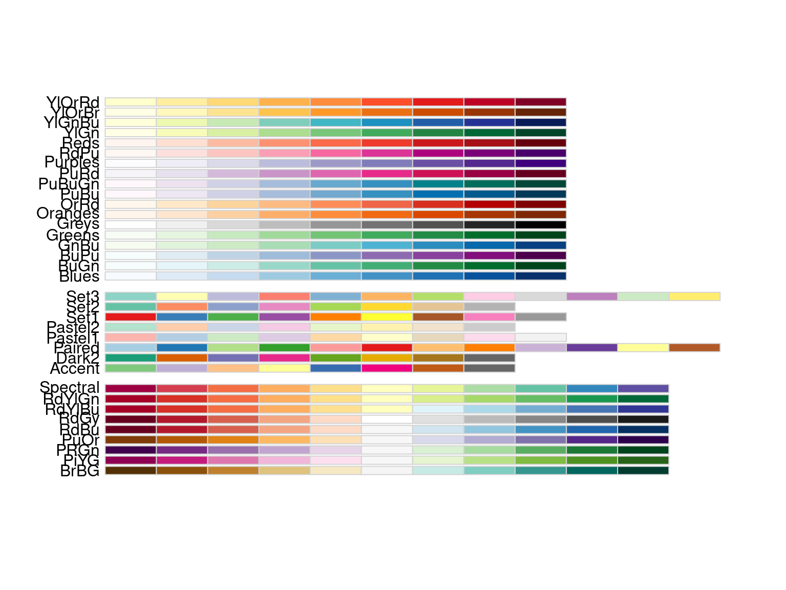

cars %>%
ggplot(aes(x = speed, y = dist))Visualisation With ggplot2
RAdelaide 2024
Dr Stevie Pederson
Black Ochre Data Labs
Telethon Kids Institute
July 11, 2024
The Grammar of Graphics
ggplot2has become the industry standard for visualisation- Core & essential part of the
tidyverse - Developed by Hadley Wickham as his PhD thesis
- An implementation of The Grammar of Graphics 1
- Breaks visualisation into layers

The Grammar of Graphics

The Grammar of Graphics
Everything is added in layers
- Data
- Usually a data.frame (or
tibble) - Can be piped in \(\implies\) modify on the fly
- Usually a data.frame (or
- Aesthetics
x&yco-ordinatescolour,fill,shape,size,linetype- grouping & transparency (
alpha)
- Geometric Objects
- points, lines, boxplot, histogram, bars etc
- Facets: Panels within plots
- Statistics: Computed summaries
- Coordinates
- polar, map, cartesian
- Themes: overall layout
An Initial Example
- Using the example dataset
cars - Two columns:
speed(mph)distanceto stop
- We can make a classic
xvsyplot using points
- The predictor (x) would be
speed - The response (y) would be
distance
An Initial Example
- We may as well start by piping our data in
- We have defined the plotting aesthetics
x&y- Don’t need to name if passing in order
- Axis limits match the data
- No geometry has been specified \(\implies\) nothing was drawn
An Initial Example
- To add points, we add
geom_point()after callingggplot()- Adding
+afterggplot()says “But wait! There’s more…”
- Adding
An Initial Example
- To add points, we add
geom_point()after callingggplot()- Adding
+afterggplot()says “But wait! There’s more…”
- Adding
- By default:
- Layer 4: No facets
- Layer 5: No summary statistics
- Layer 6: Cartesian co-ordinate system
- Layer 7: Crappy theme with grey background ü§Æ
Visualising Our Guinea Pig Data
What visualisations could we produce to inspect pigs?
Creating Our Boxplot
- A starting point might be to choose
doseas the predictor lenwill always be the response variable
Creating Our Boxplot
- To incorporate the supp methods \(\implies\) add a fill aesthetic
colouris generally applied to shape outlines
ggplot2will always separate multiple values/category
Creating Our Boxplot
- We could also separate by supp using
facet_wrap()- Can also set the number of rows/columns
- Only one value/category so no shifting
Layering Geometries
- We’re not restricted to one geometry
- The following will add points after drawing the boxplots
Layering Geometries
geom_jitter()will add a small amount of noise to separate points
Modifying Data Prior to Plotting
doseis a clearly a categorical variable with an order- In
Rthese are known asfactors- Categories referred to as
levels - Will learn in detail tomorrow
- Categories referred to as
ggplot()will automatically place character columns in alphanumeric order- Manually set the order by explicitly setting as a
factorwithlevels
Modifying Data Prior to Plotting
- Notice when we do this, the column is now
fct
# A tibble: 60 × 3
len supp dose
<dbl> <chr> <fct>
1 4.2 VC Low
2 11.5 VC Low
3 7.3 VC Low
4 5.8 VC Low
5 6.4 VC Low
6 10 VC Low
7 11.2 VC Low
8 11.2 VC Low
9 5.2 VC Low
10 7 VC Low
# ℹ 50 more rowsModifying Data Prior to Plotting
- We can also plot quanntiles with a few prior steps
- First rank the
lenvalues - Then turn into quantiles
# A tibble: 60 × 5
len supp dose rank q
<dbl> <chr> <chr> <dbl> <dbl>
1 4.2 VC Low 1 0.0167
2 11.5 VC Low 15 0.25
3 7.3 VC Low 6 0.1
4 5.8 VC Low 3 0.05
5 6.4 VC Low 4 0.0667
6 10 VC Low 11.5 0.192
7 11.2 VC Low 13.5 0.225
8 11.2 VC Low 13.5 0.225
9 5.2 VC Low 2 0.0333
10 7 VC Low 5 0.0833
# ℹ 50 more rowsModifying Data Prior to Plotting
Modifying Data Prior to Plotting
- Now we could colour points by
supp
Different Layers
Modifying Data Prior to Plotting
geom_smooth()will add a line of best fit- Almost identical to
stat_smooth()
- Almost identical to
- Automatically chosen but can be
lm,loessorgam
Modifying Geoms
- Any
aestheticset in the call toggplot()is passed to every subsequent layer - We can set aesthetics in a layer-specific manner
- Shifting
colour = supptogeom_point()will only colour points - The line of best fit will now be a single line
Modifying Geoms
Modifying Geoms
- Aesthetics can also be set outside of a call to
aes()
Modifying Geoms
- Geoms are just regular functions with multiple arguments
- The below turns off the
sebands and switches tolm
Choosing Point Shapes
- Shapes have numeric codes in
R - Examples are on the
?pchpage - The default is 19
- Can also be set as an
aesthetic sizecan also work either way

Choosing Point Shapes
Setting Scales
- Default scales are set for x & y axes
scale_x_continuous()&scale_y_continuous()- Only needed when tweaking axis names, limits, labels, breaks etc
- Also set scales for colours, shapes, fill etc
Setting Scales
scale_colour_brewer()allows pre-defined palettes- From the package
RColorBrewer
- From the package
RColorBrewer Palettes
Setting Scales
scale_colour_viridis_b/c/d()- colour-blind friendly palettes
- comes in binned (
_b()), continuous (_c()) or discrete (_d()) - excellent for heatmaps or showing differences across large range
Setting Scales
scale_colour_manual()takes a vector of colours- Vectors are formed using
c() - RStudio helpfully shows you the colour!!!
- Vectors are formed using
Themes
Themes
- We can modify the overall appearance of the plot using
theme() - Set panel colours, fonts, legend position etc
- Hide any features we don’t want
Themes
- To help us focus on the
theme()
\(\implies\) save the plot as the objectp
- We can regenerate the plot by typing it’s name
Themes
ggplot2supplies several complete themes- Applies
theme_grey()by default - Try add
theme_bw()afterp- This is my default
- Try a few others
theme_void(),theme_classic(),theme_minimal()
- Some are for specific use cases
Themes
- We can also modify manually
- Theme elements are modified using
element_*()functions- Text elements use
element_text() - Line elements use
element_line() - Box (or rectangle) elements use
element_rect() - Can disable an element entirely using
element_blank()
- Text elements use
Themes
- The panel background is set using
element_rect()coloursets the rectangle outline colourfillsets the rectangle fill
Themes
- We can set global text parameters using
text = element_text()- family, colour, size, face etc
Themes
- Individual text-based parameters can be set similarly
- Will over-ride any global setting
Themes
- Can also set a theme then modify further
- Enormous range of setting can be controlled here
Themes
- Spend a few minutes playing with the following
- Try commenting out lines or changing values
- Aesthetic names can be set manually using
labs()- Won’t over-write anything set in
scale_x/y_continuous()
- Won’t over-write anything set in
p +
ggtitle("Odontoblast Length in Guinea Pigs") +
labs(colour = NULL) +
theme(
rect = element_rect(fill = "#204080"),
text = element_text(colour = "grey80", family = "Palatino", size = 14),
panel.background = element_rect(fill = "steelblue4", colour = "grey80"),
panel.grid = element_line(colour = "grey80", linetype = 2, linewidth = 1/4),
axis.text = element_text(colour = "grey80"),
legend.background = element_rect(fill = "steelblue4", colour = "grey80"),
legend.key = element_rect(colour = NA),
legend.position = "inside",
legend.position.inside = c(1, 0),
legend.justification = c(1, 0),
plot.title = element_text(hjust = 0.5, face = "bold"),
)Themes

Saving Images
- The simple way is click
Exportin thePlotspane
Saving Images
- I think saving using code is preferable
- Modify an analysis or data \(\implies\) saved figures will also update
- This saves time & ensures reproducibility
Conclusion

A fabulous resource: https://r-graphics.org/